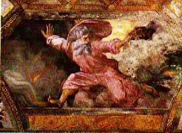

"Once in a while you can get shown the light
in the
strangest of places if you look at it right"--"Scarlet Begonias"

Light and Dark in the Lyrics of Robert Hunter
A thematic essay for The Annotated
Grateful Dead Lyrics.
By David Dodd
Copyright notice
His job is to share the light, and not to
master... --"Terrapin Station"
We humans spend our lives bumbling along, and occasionally we
have moments of insight, or of grace. They don't last long, but
they somehow make life more worth living. Many writers have
attempted to capture this feeling of momentary magical thinking;
religions are founded upon seeking a permanent state of
illumination or grace; and those who use drugs as "escape" are
often seekers of the light.
The light. Robert Hunter's lyrics for the Grateful Dead make
repeated allusion to the gold ring of understanding, knowledge,
bliss, grace, or whatever else "it" might be called, which all
too often just slips away when we try to reach it. It's a
transitory thing, this "knowing."
Hunter uses evocations of light and dark, of day and night, to
present many shades of meaning. Dawn and dark can be seen as
birth and death, as well as knowing and unknowing. And they are
not completely separate at all times: sometimes there is only
grey. Sometimes the darkness gives birth to the light, as mystery
and the unknown are as necessary as revelation. And sometimes, as
in "Blues for Allah," the seeds of light give birth to darkness:
knowledge brings a price with it.

(Image from
the Vatican's Raphael Loggias. For a larger version of the image,
see the Vatican's museum site, which offers
the image.)
It's a dichotomy as old as every creation story, or as old as Adam and Eve and their apple. And
there is the final, terrifying truth that "the more you know, the
more you know the less you know." But it's the occasional moment
of enlightenment, of transcendence, that makes all the bumbling
about worthwhile.
Hunter's use of dichotomy, of the invocation of opposite-ness,
extends beyond the light/dark references to fire and ice ("Uncle John's Band"), hot and cold ("Fire
on the Mountain") and life and death themselves. The yin-yang
consciousness is present in the repeated evocation of the symbol
of the rose.
Here's a partial inventory of references to light/dark in
Hunter's lyrics:
- "Sometimes the light's all shining on me,
Other times I can barely see..." ("Truckin'")
- "Once in a while
you get shown the light
in the strangest of places
if you look at it right" ("Scarlet
Begonias")
- "Sunlight splatters dawn with answers" ("Saint Stephen")
- "Full of tastes no tongue can know
And lights no eye can see"("Attics of My Life")
- "What fatal flowers of
darkness spring from
seeds of light" ("Blues for Allah")
- "in and out the window
like a moth before the flame" ("Box of Rain")
- "Built to last till sunshine fails
And darkness moves on all" ("Built to Last")
- "Been walking all morning
Went walking all night
I can't see much difference
between the dark and the light" ("Comes a Time")
- "So swift and bright
Strange figures of light
Float in air" ("Crazy Fingers")
- "Dark star crashes
pouring its light
into ashes" ("Dark Star")
- "Searchlight casting
for faults in the
clouds of delusion" ("Dark Star)
- "Sitting in Mangrove Valley chasing light beams..." ("Doin' That Rag")
- "The night comes so quiet
and it's close on the heels of the day" ("Eyes of the World")
- "It can ring, turn night to day
Ring like fire when you lose your way" ("Franklin's Tower")
- "Spring from night
into the sun" ("Help on the Way")
- "One way or another
this darkness got to give" ("New Speedway Boogie")
- "There is a road
no simple highway
between the dawn
and the dark of night" ("Ripple")
- "The sunny side of the street is dark" ("Shakedown Street")
- "Standing on the moon
I see a shadow on the sun" ("Standing on the Moon")
- "Till the morning comes,br>
like a highway sign
Showing you the way..." ("Till the Morning Comes")
- "Every silver lining's got a
Touch of Grey" ("Touch of Grey")
- "Inspiration move me brightly
light the song with sense and color..." ("Terrapin Station")
- "While you were gone
these spaces filled with darkness" ("At a Siding")
- "Summer flies and August dies
the world grows dark and mean" ("Days Between")
First posted: Vernal equinox, 1995
Last revised: February 15, 2000